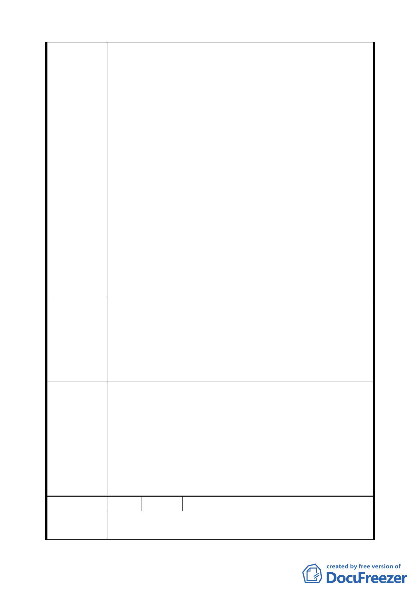

1.限制建築高度 40 公尺約為 12 樓以下，天際線的變化不夠
彈性，對都市景觀的加分受限制。
2.R1、R14、R15、R16 區塊單元高度限制規定 40 公尺，但其
經貿園區周邊街廓均未限制高度，形成週遭建物約 15－20
層之建物，高度差異極大，造成整體景觀極度不協調。
3.政府鼓勵老舊社區進行都市更新，予以獎勵容積，若假設
容積獎勵為 35％，若限高 40 公尺及建蔽率 45％，容積無法
充分使用，造成居民更新意願低落，顯然與政府推動方向略
有差異。
陳 情 理 由 4.勿造成受限於地下室之開挖率之縮小（開挖集中），致造成
地上建築物的過度集中化，影響建築物採光及通風。
5.若以地下室開挖率 55％及高度限制 40 公尺做計算，建築物
過度密集，鄰棟間隔過小，居住單元無法設計出優良採光及
通風建物。若以地下室開挖率 60％及高度限制 60 公尺做計
算，將不至於有建物過度密集與採光、通風不良等現象發生。
6.鼓勵民間從事老舊社區更新之開發意願，為市政府政策本
意，勿造成所訂定之獎勵項目在日後進行都市更新時無法使
用，進而降低居民更新之意願。
1.建議 R1、R14、R15、R16 區塊單元由原高度限制 40 公尺
放寬高度限制至 60 公尺。
建議辦法
2.建議 R1、R14、R15、R16 地下室開挖率仍維持 60％，勿變
更為 55％。
3.時程獎勵之起算時間一併修改為修訂案核定公告實施日起
算。
1.同意陳情民眾所提建議，取消公展計畫中建物高度之管
制，回歸本市土地使用分區管制規則規定辦理。
2.同意發展局所提「配合建蔽率調整，修訂地下開挖率規
委員會決議
定」，維持原公展計畫。
3.為免造成 R1 街廓與 R16、R17 街廓之不公平對待，比照本
府 95 年 6 月 15 日公告都市更新「一定時程」之適用，延長
第二期法定容積×5%之適用至 101 年 6 月 14 日，並取消第
三期時程獎勵規定。。
編 號 3 陳情人 杜勇雄等 6 人
陳情理由
土地標示：南港區經貿段 73-1 地號。
貴府「修訂臺北市南港經貿園區特定專用區細部計畫通盤檢
17